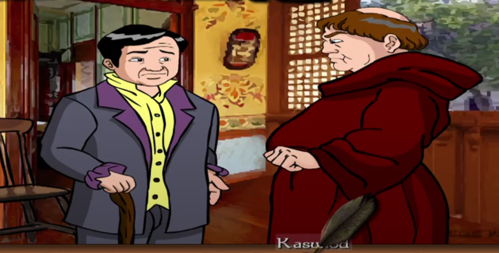

Kabanata 9 : Mga Bagay-Bagay Tungkol sa Bayan

Samantala, nagkasalubong ang karwahe nina Padre Damaso at si Crisostomo.
Papunta ang pari kina Kapitan Tiago. Nais itong makausap ng masinsinan.
Pinagalitan sya ng pari sa pagpapalabas kay Maria Clara sa beaterio at pagmamabutihan sa binatang anak ni Don Rafael.
Matapos ang kanilang pag-uusap pinaghihipan ng kapitan ang mga kandilang pinasindihan niya upang makarating ng maluwalhati si Crisostomo sa San Diego.
Ipinakilala din sa bahaging ito si Padre Sibyla. Nasa Intramuros siya at kausap ang isang matandang pari na Dominiko na may malubhang sakit.
Pinag-uusapan nila ang unti-unting pagkamulat ng bayan
Repleksiyon
Ang aral na napulot ko sa kabanatang ito ay "Ang ating kapangyarihan ay mag tatagal hanggat pinananaligan".
Ipinapakita ni Rizal Ang takot ng mga prayle sa mga taong may malayang kaisipan, na maaaring magbunyag ng mga kahinaan ng mga aral at lihim na kasaysayan ng kolonyal na simbahan